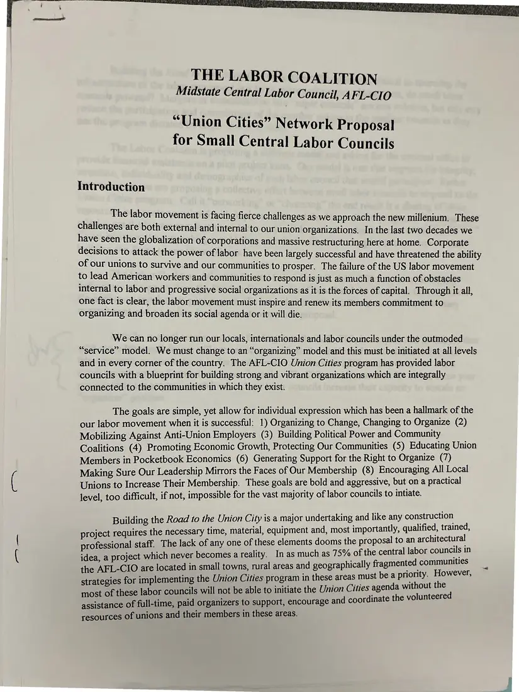
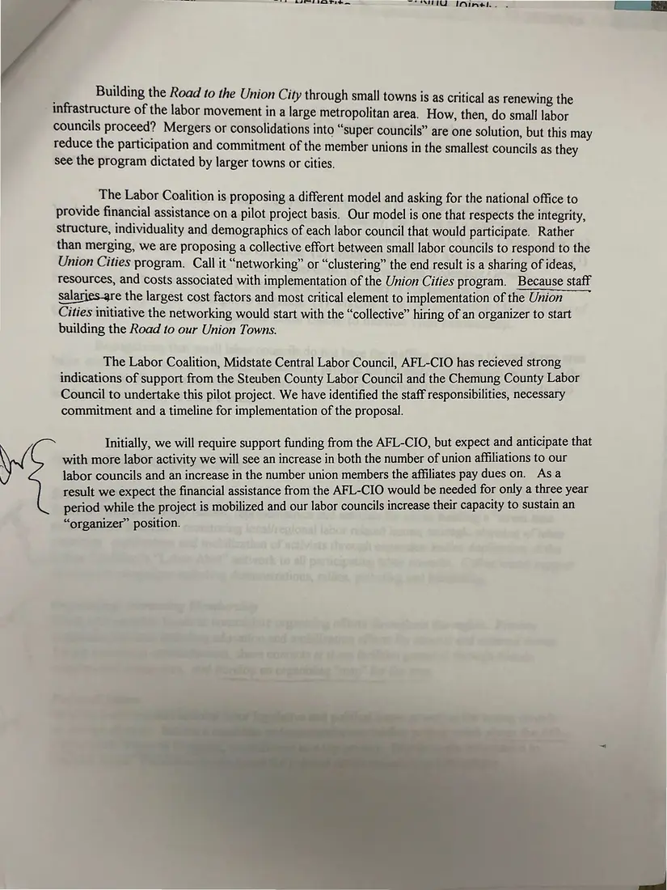

Proposal, 2 pages
“'Union Cities' Network Proposal for Small Central Labor Councils”
[1997]Date inferred
The Labor Coalition argues that small-town councils must rebuild labor's infrastructure too. It proposes a pilot in which the Steuben, Chemung, and Midstate councils share an organizer funded by the AFL-CIO for three years. Page 2 precedes page 1 in the source.
Download or cite this itemPages


(open zoom view)Read the page text (machine-read, mostly readable)
This text was generated automatically from the photograph and has not been corrected. The image is the authoritative record.
THE LABOR COALITION Midstate Central Labor Council, AFL-CIO “Union Cities” Network Proposal for Small Central Labor Councils Introduction The labor movement is facing fierce challenges as we approach the new millenium. These challenges are both external and internal to our union organizations. In the last two decades we have seen the globalization of corporations and massive restructuring here at home. Corporate decisions to attack the power of labor have been largely successful and have threatened the ability of our unions to survive and our communities to prosper. The failure of the US labor movement to lead American workers and communities to respond is just as much a function of obstacles internal to labor and progressive social organizations as it is the forces of capital. Through it all, one fact is clear, the labor movement must inspire and renew its members commitment to organizing and broaden its social agenda or it will die. We can no longer run our locals, internationals and labor councils under the outmoded “service” model. We must change to an “organizing” model and this must be initiated at all levels and in every corner of the country. The AFL-CIO Union Cities program has provided labor councils with a blueprint for building strong and vibrant organizations which are integrally connected to the communities in which they exist. The goals are simple, yet allow for individual expression which has been a hallmark of the our labor movement when it is successful: 1) Organizing to Change, Changing to Organize (2) Mobilizing Against Anti-Union Employers (3) Building Political Power and Community Coalitions (4) Promoting Economic Growth, Protecting Our Communities (5) Educating Union Members in Pocketbook Economics (6) Generating Support for the Right to Organize (7) Making Sure Our Leadership Mirrors the Faces of Our Membership (8) Encouraging All Local Unions to Increase Their Membership. These goals are bold and aggressive, but on a practical level, too difficult, if not, impossible for the vast majority of labor councils to intiate. Building the Road to the Union City is a major undertaking and like any construction project requires the necessary time, material, equipment and, most importantly, qualified, oe professional staff. The lack of any one of these elements dooms the proposal to an aC idea, a project which never becomes a reality. In as much as 15% of the central labor Sy ae the AFL-CIO are located in small towns, rural areas and geographically fr agmented eee strategies for implementing the Union Cities program in these areas must bea ati He ? most of these labor councils will not be able to initiate the Union Cities agenda wit ness 4 assistance of full-time, paid organizers to support, encourage and coordinate the volu resources of unions and their members in these areas.


(open zoom view)Read the page text (machine-read, mostly readable)
This text was generated automatically from the photograph and has not been corrected. The image is the authoritative record.
SE ASP IOP eS “NTT IAIn#eh. . Building the Road to the Union City through small towns is as critical as renewing the infrastructure of the labor movement in a large metropolitan area, How, then, do small labor councils proceed? Mergers or consolidations into “super councils” are one solution, but this may reduce the participation and commitment of the member unions in the smallest councils as they see the program dictated by larger towns or cities. The Labor Coalition is proposing a different model and asking for the national office to provide financial assistance on a pilot project basis. Our model is one that respects the integrity, structure, individuality and demographics of each labor council that would participate. Rather than merging, we are proposing a collective effort between small labor councils to respond to the Union Cities program. Call it “networking” or “clustering” the end result is a sharing of ideas, resources, and costs associated with implementation of the Union Cities program. Because staff salarjes_gre the largest cost factors and most critical element to implementation of the Union Cities initiative the networking would start with the “collective” hiring of an organizer to start building the Road to our Union Towns. The Labor Coalition, Midstate Central Labor Council, AFL-CIO has recieved strong indications of support from the Steuben County Labor Council and the Chemung County Labor Council to undertake this pilot project. We have identified the staff responsibilities, necessary commitment and a timeline for implementation of the proposal. with more labor activity we will see an increase in both the number of union affiliations to our labor councils and an increase in the number union members the affiliates pay dues on. Asa result we expect the financial assistance from the AFL-CIO would be needed for only a three year period while the project is mobilized and our labor councils increase their capacity to sustain an “organizer” position. Wn Initially, we will require support funding from the AFL-CIO, but expect and anticipate that
See something wrong, or recognize a person or event? Send a correction. If you hold rights in this item or think it should not be public, write to the same address.